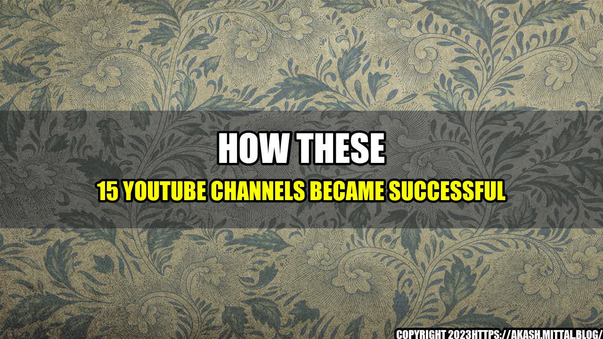

How These 15 YouTube Channels Became Successful

YouTube has become a platform for content creators and influencers to showcase their skills, talents, and knowledge. In a world where social media has taken over, YouTube has managed to stay relevant, providing opportunities for people to make a living, share their experiences, and entertain audiences globally. In this article, we will discuss the success stories of 15 YouTube channels and what you can learn from them.
The Top 15 YouTube Channels and Their Secrets to Success
- 1. PewDiePie PewDiePie has over 110 million subscribers and is one of the most popular YouTubers in the world. He started his channel in 2010 and has been posting videos on gaming, reactions, and vlogs. One of the secrets to his success is his consistency in uploading videos twice a day, seven days a week.
- 2. Tasty Tasty is a food-centered channel that has amassed over 44 million subscribers. They post instructional food videos that are easy to follow, which has made them popular with busy people who want to learn how to cook. Their videos are usually short, averaging between one to two minutes.
- 3. Dude Perfect Dude Perfect is a channel focused on sports and entertainment. They have over 56 million subscribers and their videos feature trick shots, stunts, and challenges. Their content is always high-energy which makes it entertaining to watch.
- 4. Zoella Zoella's channel started with beauty and lifestyle videos but has since expanded to fashion, travel, and more. With over 11 million subscribers, Zoella's authenticity and relatability have made her popular with younger audiences.
- 5. Ryan Higa Ryan Higa started his channel in 2006 and has over 21 million subscribers. He is a comedian and content creator who started with making lip-syncing videos but now has rap battles, comedy sketches, and parodies as well.
- 6. Michelle Phan Michelle Phan started her channel in 2006 and has over 8 million subscribers. She creates makeup tutorials and beauty product reviews. She became popular when her tutorial on 'how to look like Lady Gaga' went viral.
- 7. The Slow Mo Guys The Slow Mo Guys film things in slow motion and have over 13 million subscribers. They use high-speed cameras to capture events like blowing up watermelons and popping balloons in slow motion. Their high-quality visuals and unique content make for a mesmerizing viewing experience.
- 8. Jenna Marbles Jenna Marbles is a comedian and content creator who has over 20 million subscribers. Her videos are usually centered around her dogs, her life experiences, and comedy skits. Her authentic personality and humor have made her popular with viewers.
- 9. AsapSCIENCE AsapSCIENCE is a channel that provides answers to scientific questions using animations, humor, and pop culture references. With over 9 million subscribers, their videos are well-researched and engaging.
- 10. Rosanna Pansino Rosanna Pansino is a baker and content creator who has over 11 million subscribers. She creates instructional cooking videos with a focus on baking. Her videos are easy to follow and have made her popular with baking enthusiasts globally.
- 11. Casey Neistat Casey Neistat is a filmmaker and content creator with over 12 million subscribers. He is known for his vlogs where he shares his daily experiences, travels, and opinions. His candid and authentic approach to vlogging has made him popular with viewers.
- 12. Lilly Singh Lilly Singh is a comedian and motivational speaker with over 14 million subscribers. She creates comedic sketches and motivational videos that inspire her viewers. Her positive messages and relatable personality have made her popular with younger audiences.
- 13. Epic Meal Time Epic Meal Time is a channel focused on cooking decadent and over-the-top meals. With over 7 million subscribers, their videos are always entertaining and have a unique sense of humor. Their content is not for the health-conscious, but it's always a spectacle to watch.
- 14. The Game Theorists The Game Theorists is a channel that provides theories, analysis, and explanations of popular video games. With over 11 million subscribers, their videos are well-researched and provide insights into popular games like Minecraft, Five Nights at Freddy's, and more.
- 15. Good Mythical Morning Good Mythical Morning is a talk show-style channel hosted by Rhett McLaughlin and Link Neal. With over 16 million subscribers, their videos usually involve food challenges, experiments, and interviews with celebrity guests. Their chemistry and humor have made them popular with audiences worldwide.
All these YouTubers have unique content that makes them stand out. Some of them have been on the platform for over a decade, showing that consistency and hard work can pay off. Let's look at some of the quantifiable examples of their success.
Success
- PewDiePie, for example, has over 26 billion views on his videos, making him the most-watched channel of all time.
- Tasty's videos have been viewed over 70 billion times, making them one of the most-watched food channels on YouTube.
- Dude Perfect's videos have been viewed over 12 billion times and they have over 8 billion total video views on all their content.
- Rosanna Pansino has over 3 billion views on her cooking videos, making her one of the most popular baking channels on YouTube.
These channels have been successful because they have found an audience, provided unique content, and stayed committed to their channel. They are always looking for ways to improve and have diversified their content to keep their viewers engaged. So, how can you apply their success strategies to your own channel?
What You Can Learn from These YouTube Channels?
- Be Authentic
It's important to be true to yourself and not try to mimic someone else's content. Your audience will appreciate your authentic personality and will be more likely to subscribe and watch your videos.
- Find Your Niche
Figure out what you are passionate about and create content around that. It's essential to find your niche to make your content stand out from the hundreds of thousands of other channels out there.
- Be Consistent
Consistency is key to success on YouTube. You should create a content schedule and stick to it. This will make it easier for your audience to know when to expect new videos and will keep them engaged with your channel.
By following these tips, you can create a successful YouTube channel that has the potential to reach millions of viewers. Remember that success doesn't come overnight and requires hard work and dedication. But with the right strategies in place, anything is possible.
Conclusion
YouTube has provided a platform for people to showcase their skills and talents to a global audience. These 15 YouTube channels have shown that authenticity, finding your niche, and being consistent can lead to a successful channel. By applying these tips to your own channel, you can create engaging content that resonates with viewers and potentially grow your audience over time.
Reference URLs: https://www.youtube.com/user/PewDiePie, https://www.youtube.com/user/buzzfeedtasty, https://www.youtube.com/user/corycotton, https://www.youtube.com/user/zoella280390, https://www.youtube.com/user/nigahiga, https://www.youtube.com/user/MichellePhan, https://www.youtube.com/user/theslowmoguys, https://www.youtube.com/user/JennaMarbles, https://www.youtube.com/user/AsapSCIENCE, https://www.youtube.com/user/rosannapansino, https://www.youtube.com/user/caseyneistat, https://www.youtube.com/user/IISuperwomanII, https://www.youtube.com/user/EpicMealTime, https://www.youtube.com/user/MatthewPatrick13, https://www.youtube.com/user/rhettandlink2
Hashtags: #YouTube #SuccessTips #ContentCreators #Influencers #YouTubeChannels
Category: Social Media
Curated by Team Akash.Mittal.Blog
Share on Twitter Share on LinkedIn